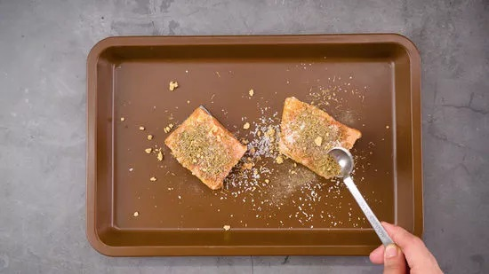

How to cook salmon
Ingredients
- 2 Frozen Salmon Fillets
- 1 Tablespoon Avocado Oil
- 1 Teaspoon Himalayan Sea Salt
- 1/4 Teaspoon Ground Black Pepper
- 1/2 Teaspoon Garlic Powder
- 1/2 Teaspoon Dried Thyme
Steps
1. Preheat the oven to 425 °F. Remove the frozen fillets from the packaging under cold water.
2. Use paper towel to pat salmon dry. Evenly spread avocado oil across each side of the fillet.

3. Place the fillets skin-side down onto a pan. Evenly sprinkle all seasonings on upward side.
4. Use foil to cover the pan so no steam can escape. Place the pan in the preheated oven for 10 minutes.
5. Remove the foil from the tray and let cook for another 20-25 minutes.
6. Remove the pan from the oven; let the fillets remain on the pan for 3 minutes to reabsorb some of the liquid. Remove the salmon from the tray and enjoy!